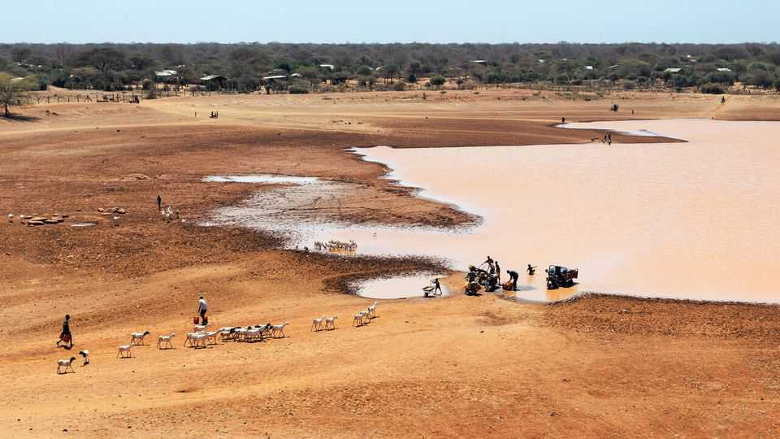

The coming El Niño could be the strongest ever recorded
That is bad news for a warming world
June 18th 2026

HUNDREDS OF YEARS ago Peruvian fishermen noticed that, every few years, the anchovies in the equatorial Pacific Ocean would vanish. Since the disappearances happened around Christmas, they named the event after el niño Jesus—“the Christ child”.
These days the phenomenon, known simply as El Niño, is recognised as a recurring climatic pattern that alters the weather all over the world. It causes droughts in some places, heavy rain in others, heatwaves, wildfires and a general warming of the planet. On June 11th the National Oceanic and Atmospheric Administration, an arm of the American government, announced that a new El Niño had begun. And this one could be a whopper.
El Niño is driven by a shift in the winds above the eastern Pacific, which draws a band of warmer-than-average surface water into the “Niño 3.4” region (see map). The strength of any particular El Niño is measured by how much warmer the water gets. Anything above a 2°C rise over the long-run average is considered strong. Forecasts from most of the world’s modellers for the rest of this year and the first couple of months of 2027 suggest a rise in sea-surface temperatures of more than 2.5°C—and perhaps even 3°C. That would be unprecedented in the 75 years for which scientists have been keeping records. (The current record is held by the 1982-83 El Niño, when water temperatures rose 2.5°C.)
Anchovies prefer cooler water, which is why they decamp southwards during an El Niño. But the effects are not felt just by Peruvian fishermen. The sheer size of the Pacific, and the interconnectedness of the world’s weather systems, means that each El Niño causes a vast redistribution of heat and moisture across the planet.

One result is to make the world warmer. El Niño is not caused by climate change. But the two phenomena amplify each other’s effects (see chart). A strong El Niño in 1997-1998 made 1998 the hottest year ever at the time, with average temperatures nearly 1°C above pre-industrial levels. Following another strong El Niño in 2015-16, the record was broken again, with temperatures in 2016 up more than 1°C. The current record holder is 2024, when temperatures were 1.55°C higher than the pre-industrial average. Climate modellers think 2027 could be hotter still.
When it comes to countries and continents, El Niño’s effects are more variable (see map). The El Niños of 1997-98 and 2015-16 caused havoc in eastern and southern Africa, Central America and Oceania. Droughts parched crops and pasturelands, leaving millions hungry and many forced to migrate in search of food.
Similarly baleful effects are possible this time, too. On June 9th the Food and Agriculture Organisation (FAO), an arm of the UN, warned that southern Africa and the Sahel—a semi-arid ribbon of land along the southern borders of the Sahara desert—are particularly at risk. The most recent El Niño in 2023-24, when water temperatures peaked at 1.5°C above normal, was associated with the worst drought in more than a century in southern Africa.
In east Africa, the FAO warned that Somalia could be hit by a double-whammy of a drought until October followed by heavy rain until December. That is less reassuring than it sounds: instead of providing relief, heavy rainfall after a long drought can cause floods, because water cannot sink fast enough into parched soil. Central America, the Caribbean and parts of Asia are also at risk of drought.

Many of these places are already suffering, due to wars and pre-existing hunger. The blocking of the Strait of Hormuz has made fertiliser scarce just as many farmers need it for their next crop cycles (its reopening, announced on June 14th by Donald Trump, America’s president, is uncertain and comes too late). The European Commission has warned of humanitarian disasters in African countries including Chad, Somalia, South Sudan and Sudan, as well as Ecuador, Haiti and Venezuela. There are ways to blunt the impact: planting drought-tolerant seeds, for instance, or storing fodder and water for livestock. But the time to start is now. ■
Curious about the world? To enjoy our mind-expanding science coverage, sign up to Simply Science, our weekly subscriber-only newsletter.